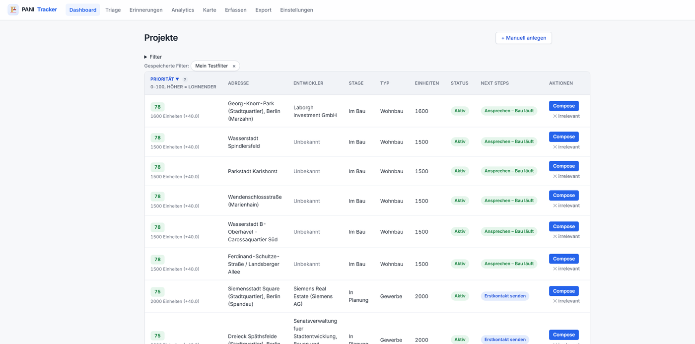
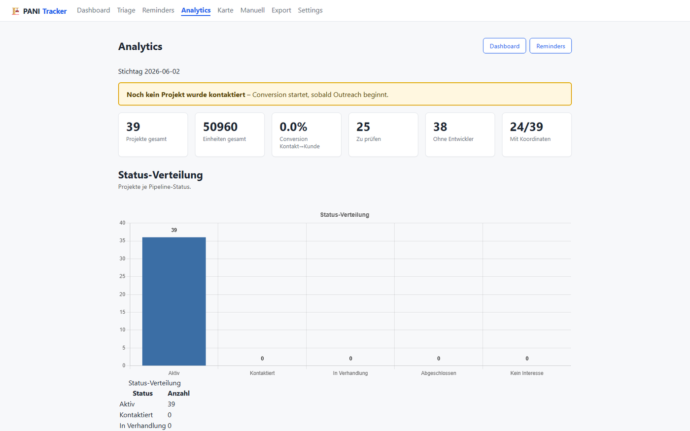

Referenz aus dem TOTUS Portfolio
PANI Tracker
Das Radar für große Bauprojekte in Berlin und Brandenburg: findet neue Großprojekte automatisch, priorisiert sie und strukturiert Ihre Entwickler-Ansprache, vom Erstkontakt bis zum Mandat.

Das Radar in zwei Ansichten.
Projekt-Pipeline und Funnel-Analytics, direkt aus der laufenden Anwendung.

Sieben Module, ein Radar.
Jedes Modul deckt einen Schritt der Entwickler-Akquise ab.
Scraper-Pipeline
Neun Quellen automatisch überwacht: Portale, Baugenehmigungen, Landesplanung, Regionalnews.
Priorisierung & Scoring
Transparentes Scoring von 0 bis 100 zeigt, welche Projekte jetzt Ansprache lohnen.
Dashboard & Karte
Projektliste, Detailansicht und interaktive Karte mit Phasen-Pins.
Outreach-Automation
Gmail-Versand mit Vorlagen je Bauphase, automatisch protokolliert.
Kontakt-Lookup
Ermittelt E-Mail-Adressen der Projektentwickler automatisch.
Reminders & Kalender
Follow-up-Erinnerungen mit ICS-Export in Ihren Kalender.
Analytics
Conversion-Funnel vom Erstkontakt bis zum Mandat.
Vom Radar zum Mandat.
Fünf Schritte von der Quelle bis zur Auswertung.
Erfassen
Scraper sammeln laufend neue Großprojekte aus neun Quellen.
Priorisieren
Scoring und Filter zeigen die lohnendsten Projekte zuerst.
Kontaktieren
Erstkontakt per Gmail-Vorlage, automatisch als Kontakt protokolliert.
Nachfassen
Reminder und Kalenderexport halten Follow-ups im Blick.
Auswerten
Funnel-Analytics messen den Weg vom Kontakt zum Mandat.
Kennzahlen
Python · Supabase · Scraper · Geodaten
Sehen Sie den PANI Tracker live.
In einer kurzen Demo zeigen wir den Weg vom Radar zum Mandat.